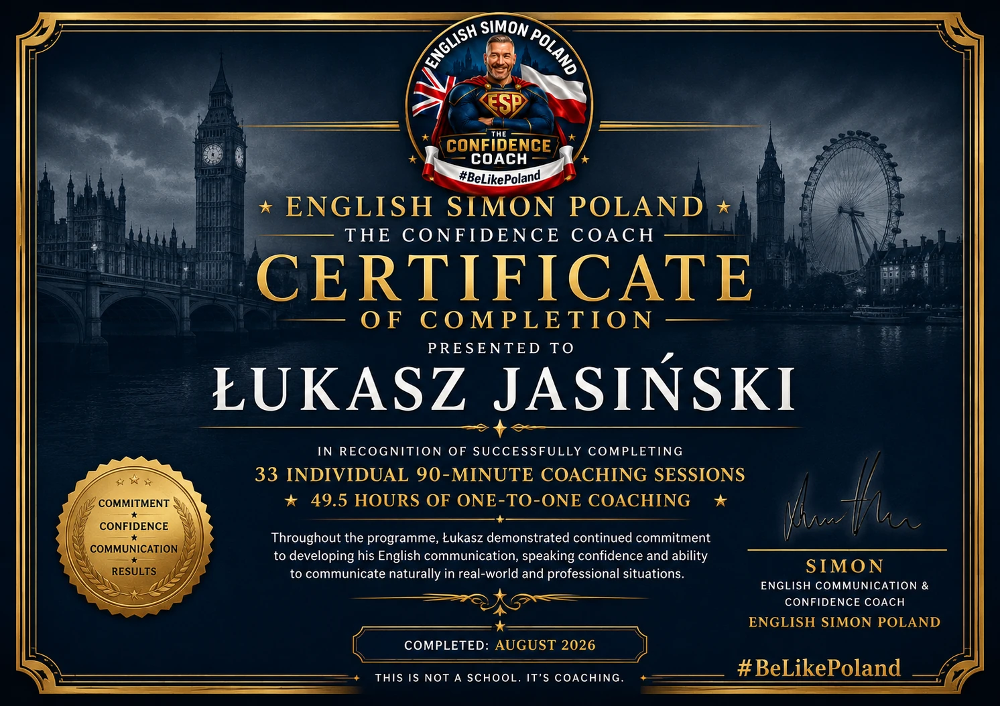

THREE SECOND RULE
Krótka pauza pomaga odzyskać kontrolę nad rozmową, znaleźć prostsze słowa i odpowiedzieć z większą pewnością siebie.
BRYTYJSKIE DOŚWIADCZENIE · REALNE EFEKTY
To nie jest szkoła. To coaching.
POZNAJ SWOJEGO COACHA
Znasz więcej angielskiego, niż myślisz. Pomogę Ci nabrać pewności, by z niego korzystać.
Moja przygoda z komunikacją zaczęła się w Wielkiej Brytanii, gdy jako młody człowiek zajmowałem się sprzedażą telefoniczną. Nauczyłem się słuchać, budować relacje i prowadzić rozmowy z pewnością siebie — umiejętności, które do dziś są podstawą mojej pracy.
Później stworzyłem Purely Ponds, firmę zajmującą się specjalistycznymi oczkami wodnymi i filtracją, również dla szkół. Następnie przez około 20 lat prowadziłem działalność w branży artykułów promocyjnych, łącząc sprzedaż, marketing, branding, obsługę klienta oraz udział w wydarzeniach i targach. Pracowałem z dużymi markami, w tym Panasonic. W 2004 roku otrzymałem lokalną nagrodę za innowacyjność od Mid Beds District Council.
Po latach prowadzenia biznesu w Wielkiej Brytanii rozpocząłem nowy rozdział w Polsce. Zaczynałem od prostych ogłoszeń w lokalnej prasie, a później pracowałem w dwóch prywatnych szkołach językowych. Z tego doświadczenia i mojej pasji do komunikacji powstało English Simon Poland. Wśród moich klientów byli także profesjonaliści zatrudnieni w firmie WIŚNIOWSKI.
Mój coaching jest osobisty, praktyczny i kreatywny. Z czasem opracowałem własne techniki, które pomagają klientom przestać nadmiernie analizować i mówić bardziej naturalnie. Three Second Rule zachęca do krótkiej pauzy przed odpowiedzią, a Three Door Exercise pomaga wybrać poziom języka odpowiedni do sytuacji.
Wykorzystuję realistyczne rozmowy, odgrywanie ról, przydatne wyrażenia i ćwiczenia dopasowane do celów każdej osoby — od spotkań biznesowych i prezentacji po podróże i codzienne rozmowy. Sam uczę się polskiego, więc wiem, jak trudno bywa znaleźć właściwe słowo. Razem szukamy prostszych sposobów wyrażania myśli i krok po kroku budujemy pewność siebie.
Jestem dumny z dobrej reputacji, którą zbudowałem wśród klientów w Polsce, i nadal chcę pomagać kolejnym osobom odnaleźć swój głos w języku angielskim. Czekam na wiadomość od Ciebie.
Simon Dutton ENGLISH SIMON POLANDMOJE AUTORSKIE METODY
Krótka pauza pomaga odzyskać kontrolę nad rozmową, znaleźć prostsze słowa i odpowiedzieć z większą pewnością siebie.
Trzy poziomy: wyjaśnienie proste jak dla dziecka, naturalny język codzienny i bardziej zaawansowany język biznesowy. W wielu sytuacjach najbardziej skuteczny jest właśnie drugi poziom.

POWIĘKSZ CERTYFIKAT ↗REALNE ZAANGAŻOWANIE
Łukasz ukończył 33 indywidualne sesje po 90 minut: 49,5 godziny coachingu jeden na jeden. Certyfikat, ukończony w sierpniu 2026 roku, dokumentuje jego zaangażowanie w rozwijanie komunikacji.
PROGRAMY COACHINGOWE
Zaczynamy od 60-minutowej rozmowy o Twoich potrzebach, poziomie pewności i celach. Następnie przygotowuję indywidualny plan, który rozwija się wraz z Tobą. Co 10 sesji otrzymujesz raport postępów. Coaching odbywa się głównie online; spotkania w okolicach Nowego Sącza są możliwe po uzgodnieniu.
2 sesje miesięcznie
4 sesje miesięcznie
8 sesji miesięcznie
COACHING DLA FIRM
Praktyczny coaching i warsztaty dla pracowników oraz zespołów: sprzedaż, rozmowy telefoniczne, prezentacje, obsługa reklamacji, targi i komunikacja z gośćmi hoteli oraz restauracji. Pracujemy online lub w siedzibie firmy po uzgodnieniu — w Nowym Sączu, Krakowie i innych miejscach w Polsce.
ZAPYTAJ O COACHING DLA FIRMYOPINIE
Autentyczne opinie klientów znajdziesz na mojej stronie na Facebooku.
ZNAJDŹ MNIE NA FACEBOOKU ↗SKONTAKTUJ SIĘ